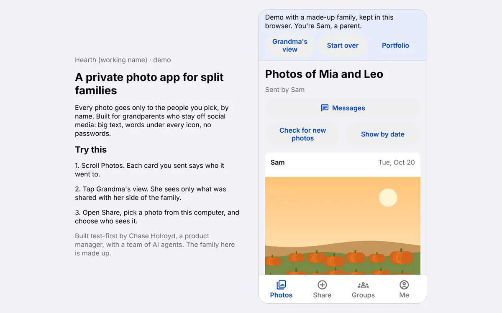
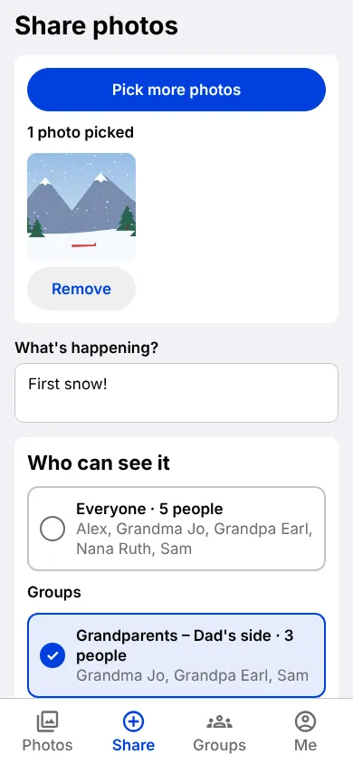
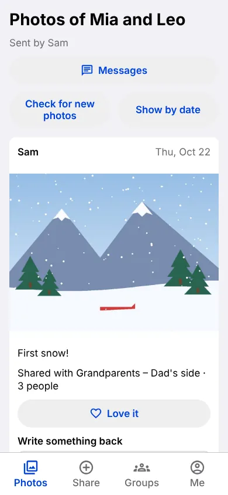
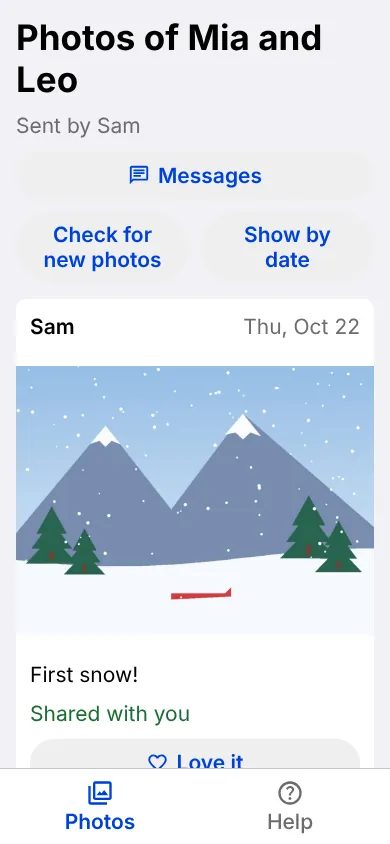

Mobile app · working name · family beta
Hearth
A private family photo app. Two blended families, five family group texts, and grandparents on Android while everyone else is on iPhone. I set out to build one private place where each photo reaches exactly the people it's meant for.
- Per postaudience you choose
- USwhere photos are stored
- 0ads, trackers or AI training
- Test-firstevery fix starts as a failing test
The problem
Families with divorces, remarriages and step-relatives don't fit one group chat. Photos of our kids arrived late, compressed, or not at all, and every send carried the worry of who might feel left out. Existing family apps assume one household, and we don't post our kids publicly.
What I built
- Groups you name: share with Everyone, one side of the family, or an event. One person can be in several groups.
- No social pressure: no "Seen by 3 of 8" count. A returned heart shows the photo arrived.
- Built for grandparents: large text and tap targets, words under every icon, and a 6-digit email code instead of a password.




A made-up family with drawn sample pictures. No real people.
How it works
Photos are encrypted on the phone (AES-256-GCM) before upload, location and camera data are stripped and checked on the phone, group chat is end-to-end encrypted with MLS (RFC 9420), and access rules live in the database with Postgres row-level security, so a post you can't see behaves as if it doesn't exist.
The limit: today Hearth's server still holds the photo keys. A family vault, where only family phones hold the keys, is planned and not built.
Product calls
- Delete the model built yesterday. A fixed family tree was specced, built and deployed. One real relative belonged in two households, so it was replaced by plain named groups anyone can be in more than once.
- Measure feelings, not just engagement. "Seen by 3 of 8" is a guilt meter in a family, so it was cut.
- Claim only what's true today. The app says "stored in the US", not "never leaves the US", because push notifications and vendor support cross borders.
Proof
- Tested1,291 app tests and 1,199 database checks, counted with a script in the repo (scripts/test-totals.sh).
- Test-firstEvery change starts with a failing test, and every product decision gets a persona check that CI enforces.
- OpenThe code is public on GitHub, with architecture and threat-model docs.
- Self-reviewedNo outside security audit yet.
Status and what's next
The core flow works end to end on a phone. A private beta with about a dozen family members, mostly grandparents, is the next step. I'm the founder and product lead, with my two brothers contributing on security and on marketing and communications. I ran the build with Claude Code and a set of role prompts, tests first. I built it with Claude Code and nine role prompts (staff PM, QA, engineer, designer and more), routed by a chief-of-staff session.
The demo isn't up right now.
The demo is a made-up family kept only in your browser: no sign-in, no backend.